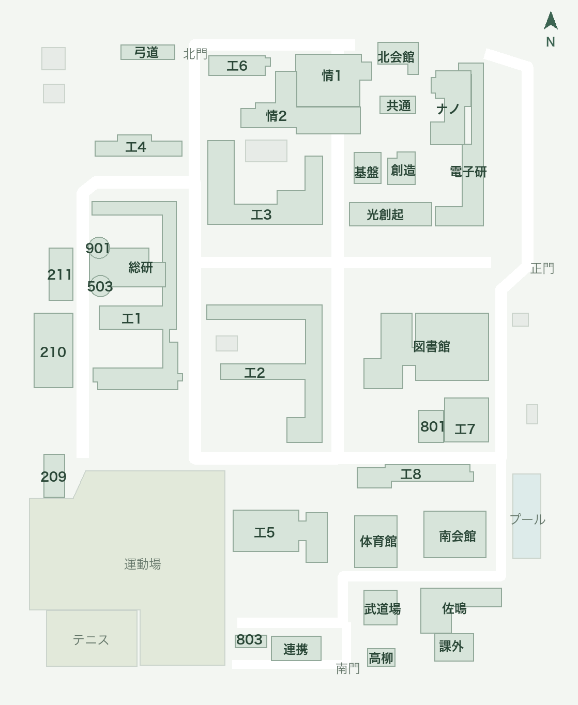

開いた瞬間の地図を広くし、時間割の入口を時計にする。予定の詳細には、その回だけのメモを書く。記事は人気順と最小限の検索から始める。
利用の流れ: ホーム → 場所を確認 → 地図を拡大 → 予定にメモ。記事 → 人気を読む → 必要なときだけ絞り込む。
未承認 · pending 仕様v2・承認の正本。人気の計算、1.6倍、500ms自動保存は今回の提案値。
操作モックを開く ↗320 / 390pxでも操作できます。記事・予定・数値は架空。外部通信・実装・承認記録は行いません。
提案仕様
最初に地図が広く見え、入力したときだけ候補が現れる。
浜松キャンパスマップ

全体基準 1.6倍候補は最大3行。選ぶとキーボードを閉じ、建物を中央へ寄せる。
- 初期は空欄・候補なし・全体基準1.6倍。390×700で地図領域400px以上。通常の操作説明・空欄説明・常設の出典文章を表示しない。入力時だけ検索欄の右端に44px領域の小さい×を置き、入力・候補・強調を解除して入力へフォーカスを戻す。閉じる×と名前・位置を区別。
- 候補は建物名・別名・登録教室だけ。件数・選択方法の説明は読み上げ通知のみ。画面には候補と選択建物名を示し、0件は「見つかりません」、遠隔は「オンライン」だけ。44px行・3行の高さ・残りは候補内をスクロール。矢印キー / Enter。Escapeは候補表示中なら候補だけ閉じ、非表示なら地図を閉じる。
- 選択後は候補を閉じ、カタログの同じ座標へ移動。再検索で古い強調を解除。全体表示でも選択を保持。
- ドラッグ / ピンチ / ＋− / 全体。倍率1〜4倍。ホームの場所から地図へのスクロールと選択の引継ぎを維持。
空欄、複数候補、0件、オンラインを区別する。
検索欄の下は地図。候補一覧は作らない。
例: 情13 → 情報学部2号館。登録位置 [535, 223] を中央に強調。
見つかりません
オンライン
既存の画像と登録カタログを使う。
登録カタログと既存地図。2026-04-01・北が上。PDFから転記した位置・形状の概略図で、測量図・経路案内ではない。出典・精度はこの資料とカタログに保持し通常画面には表示しない。新しい位置情報取得・外部地図APIは不要。

時間割の入口は、小さな時計SVGとラベルで伝える。
10:20 –11:50
情報リテラシー演習情13 ↗ キャンパスマップ
文字盤と針を示す18〜20pxの時計。1回のタップで時間割を開く。
文字記号▦を時計の線画SVGへ置換。ラベル「時間割を見る」と44pxの操作領域を維持し、色だけに依存しない。今日の予定見出し横にある現実装の「予定表へ／予定表を見る」を削除する。今日の予定一覧と下部5タブの構成・順番を維持し、予定表は下部タブから開く。
予定詳細は、その回のメモを中心にする。閉じるは右上×ひとつ。
情報リテラシー演習とデータの整理・活用
情13 ↗ キャンパスマップ
この予定のメモ
5000文字まで、入力停止500msで端末内へ自動保存する。
- 長い題名と44pxの×は別列。日時・場所は小さく、予定編集は補助操作。全文と場所→ホームの地図へスクロール→拡大・検索を保持。
- 保存中 / 保存済み / 保存できません。×・Escape・場所移動・編集では保存完了を待つ。
- 失敗時は入力と詳細を残し、再試行・入力書き出しを用意。別タブ競合で無断上書きしない。
- 編集中・保存中・失敗時の自動更新を待機させる。本文はプレーンテキスト。
保存に失敗しても、入力を失わずやり直せる。
保存済み
保存中…
移動は完了まで待つ。
メモは予定IDごと。同じ授業の別の回にはコピーしない。
タイトル・時刻の修正、同じIDのPDF再取込で保持。取消・削除・取込差し替えでも本文を自動消去せず書き出しに残す。別IDへ推測で付替えない。旧データは空として読む。欄の全消去を保存するとその予定のメモを削除。通常メモ・PDF解析内容は変更しない。
既存の入口: web/src/main.ts:279 / showEvent。
記事は人気順から。絞り込みは必要なときだけ開く。
記事
履修からレポートまで、後期を気持ちよく始めるためのノート
提出前に確認したいことを一枚に。授業で使える小さな工夫をまとめました。
検索1行と切替の直後に、記事カードを表示する。
- 登録は小さな文字、絞り込みは18〜20pxのスライダーSVG＋適用数、人気 / 新着 / ブックマークは文字と選択下線の3択。塗りつぶし・囲みを減らし、操作領域は44px以上で重ねず入力文字16px以上。保存記事は新着順。人気・新着へ戻すと保存記事限定を解除し、他の条件は保持。英字見出しとNotion説明を初期一覧から除く。
- 閲覧は目の線画SVG＋数字（非操作）、ブックマークはしおりSVG＋数字を一つの切替にする。選択中は塗りつぶしとaria-pressed、読み上げ名は意味・数値・操作を含む。「閲覧／ブックマーク」「保存／保存済み」の重複ラベルは表示しない。
- カテゴリと講義は絞り込みシートへ。候補は簡潔な行とチェックで示し、ネイティブメニューに戻さない。適用数と解除を表示。名前付き投稿者の絞り込みは保持し、匿名には増やさない。
- 390×700の標準文字で、長い最上位題名・短い紹介文・閲覧数・ブックマーク数が下部タブより上に収まる。
- 人気枠を分離せず全カードを並べる。全体0件 / 条件0件 / 取得中 / 失敗と前回値を区別。
絞り込み・空・失敗のあとも、次の操作が見える。
人気順の通常一覧。画面の数値は累計閲覧数と現在のブックマーク数。目・しおりのSVGと数字で表示。
記事の絞り込み
カテゴリ講義記事を取得しています…
前回取得した記事を表示しています。
前回取得値・架空記事
人気は7日間の閲覧数＋現在のブックマーク数×3で決める。
既存のview_events.day_jstとbookmarksを集計する。新D1テーブル・行動追跡は不要。sort / cursorの不正は400。期間はカーソルに固定し、再取得で更新。順位変動は固定せずID重複を除去。ブックマーク直後に閲覧中のカードを移動しない。
既存の入口: web/server/worker.ts:99 / 記事GET。
狭い画面・文字拡大・キーボードでも、操作と既存データを守る。
- 320×640 / 390×700 / PC、長い題名、文字拡大、キーボード表示。ページの横溢れなし、タップ44px、フォーカス、Escape、動きを減らす設定。
- APIは並び・同点・7日境界・50件以上の継続・各絞り込み・旧クライアントを検証。固定データは全件へ重複欠落なく到達。
- 順位変動時はID重複を除去、再読み込みで先頭から最新順。リアルタイム順位スナップショット保証は対象外。
- PDF・既存予定・通常メモ・背景・自動更新の保護・本人限定Accessを維持。
仕様確認のあと、承認された範囲を実装・検証する。
既存の地図・IndexedDB・記事DBを共用する。
クラウド送信やアカウント新設は行わない。他の入力フォームの保存・確認処理は一律変更しない。
対象は地図・入口・その回のメモ・記事一覧（AC1–9）。
対象外: 外部カレンダー、全授業回の共通メモ、画像添付、通知、AI評価・個人推薦、リアルタイム順位保証、新規アカウント、位置情報追跡、Swift、Cloudflare設定変更。018の承認・配信承認は019へ流用しない。
受入条件への入口
- AC1: 初期1.6倍・地図高さ400px・拡縮移動。地図規則
- AC2: 入力時だけ候補・選択中央・未知を推測しない。検索状態
- AC3: 時計SVG・44px・1回で時間割。ホームの予定表重複入口を削除。入口
- AC4: ×一つ・長いタイトル・メモが主領域。予定詳細
- AC5: 5000文字・500ms保存・失敗保持・移動待機・競合。保存
- AC6: 同じIDで共有・別の回へコピーなし・孤立メモ保持。データ規則
- AC7: 7暦日閲覧＋ブックマーク×3・サーバー人気順・互換・目/しおりSVG＋数字。順位
- AC8: 軽い文字/下線の3択・44px領域・16px入力・最上位カードが見える密度・各空と失敗。一覧
- AC9: 320 / 390 / PC・アクセシビリティ・API境界・回帰。検証の範囲
完全な条件と対象範囲は仕様正本。モックの動作は製品やAPIの合格を意味しない。
未解決事項
なし。倍率・保存方式・人気の計算はこの版の具体案で、既存の合意とは扱わない。コメントで改訂できます。
実装承認は別に確認
状態はpending。019-map-notes-discovery / 仕様版2 / 地図優先の検索・ホーム導線とアイコン・予定ごとのメモ・人気記事と一覧の密度（AC1–9）。承認根拠は正本の実装承認欄だけに記録します。回答・閲覧・コピーで実装は開始しません。